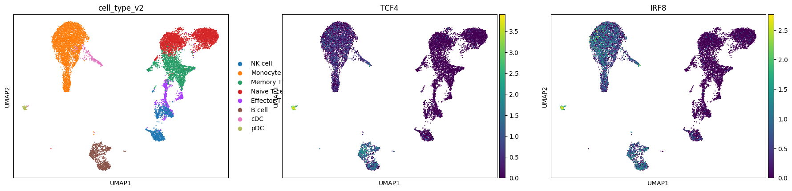
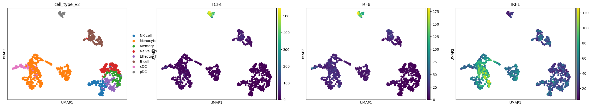

Prepare Data for Cell2Net Training on PBMC#
This tutorial demonstrates the comprehensive data preparation pipeline for Cell2Net training using Peripheral Blood Mononuclear Cells (PBMC) multiome data. We’ll transform raw single-cell measurements into analysis-ready datasets optimized for regulatory network modeling.
Overview#
Cell2Net requires carefully prepared multiome data that integrates:
Gene expression profiles (RNA-seq)
Chromatin accessibility (ATAC-seq)
DNA sequence information for regulatory regions
Transcription factor motif annotations
Peak-to-gene regulatory relationships
import warnings
warnings.filterwarnings('ignore')
import os
import numpy as np
import pandas as pd
import scanpy as sc
import mudata as md
import cell2net as cn
md.set_options(pull_on_update=False)
<mudata._core.config.set_options at 0x7fe8ebb76f60>
cn.__version__
'0.13'
Load Raw PBMC Multiome Data#
Import the preprocessed PBMC multiome dataset containing paired RNA-seq and ATAC-seq measurements. This dataset represents the full cellular diversity of the peripheral blood immune system.
mdata = md.read_h5mu(f'./mdata.h5mu')
Examine the structure and dimensions of our multiome dataset:
mdata
MuData object with n_obs × n_vars = 11131 × 131516
obs: 'cell_type', 'cell_type_v2', 'total_counts_rna', 'total_counts_atac', 'total_counts_rna_log', 'total_counts_atac_log'
2 modalities
rna: 11131 x 15932
obs: 'cell_type', 'n_genes_by_counts', 'log1p_n_genes_by_counts', 'total_counts', 'log1p_total_counts', 'pct_counts_in_top_50_genes', 'pct_counts_in_top_100_genes', 'pct_counts_in_top_200_genes', 'pct_counts_in_top_500_genes', 'cell_type_v2'
var: 'genes', 'n_cells', 'n_cells_by_counts', 'mean_counts', 'log1p_mean_counts', 'pct_dropout_by_counts', 'total_counts', 'log1p_total_counts', 'highly_variable', 'highly_variable_rank', 'means', 'variances', 'variances_norm'
uns: 'cell_type_colors', 'cell_type_v2_colors', 'hvg'
obsm: 'X_umap'
layers: 'counts'
atac: 11131 x 115584
obs: 'cell_type', 'n_genes_by_counts', 'log1p_n_genes_by_counts', 'total_counts', 'log1p_total_counts', 'pct_counts_in_top_50_genes', 'pct_counts_in_top_100_genes', 'pct_counts_in_top_200_genes', 'pct_counts_in_top_500_genes', 'cell_type_v2'
var: 'peaks', 'n_cells_by_counts', 'mean_counts', 'log1p_mean_counts', 'pct_dropout_by_counts', 'total_counts', 'log1p_total_counts'
uns: 'cell_type_colors', 'cell_type_v2_colors'
obsm: 'X_umap'
layers: 'counts'RNA Data Preprocessing#
Apply standard single-cell RNA-seq normalization and dimensionality reduction:
Total count normalization: Scale gene expression to account for sequencing depth differences
Log transformation: Stabilize variance and make data more normally distributed
Principal Component Analysis: Reduce dimensionality while preserving major expression patterns
This preprocessing is essential for identifying highly variable genes and computing cellular similarities.
sc.pp.normalize_total(mdata['rna'])
sc.pp.log1p(mdata['rna'])
sc.tl.pca(mdata['rna'], n_comps=30, use_highly_variable=True)
Visualize Cellular Diversity#
Explore the immune cell populations and their marker gene expression patterns. This visualization helps us understand:
Cell type distribution: Major immune populations (T cells, B cells, monocytes, etc.)
Marker gene expression: TCF4 (B cell/pDC marker) and IRF8 (myeloid/DC marker)
Data quality: Well-separated cell types indicate good data quality
sc.pl.umap(mdata["rna"], color=["cell_type_v2", "TCF4", "IRF8"])

Create Metacells for Network Modeling#
Generate metacells to aggregate similar single cells for improved Cell2Net training:
Why Metacells?#
Noise reduction: Average out technical variability while preserving biological signal
Computational efficiency: Reduce dataset size from ~10K cells to 1K metacells
Statistical power: Improve signal-to-noise ratio for regulatory relationships
Cell type preservation: Maintain representation of all immune populations
Metacell Generation Process:#
Similarity calculation: Use PCA and nearest neighbor graphs
Community detection: Group similar cells using clustering algorithms
Expression aggregation: Average gene expression within each metacell
Quality control: Ensure metacells represent coherent cell states
mdata_bulk = cn.tl.get_metacells(mdata, n_metacells=1000)
Examine the metacell metadata and cell type composition:
mdata_bulk.obs
| cell_type | cell_type_v2 | total_counts_rna | total_counts_atac | total_counts_rna_log | total_counts_atac_log | |
|---|---|---|---|---|---|---|
| AAACAGCCAGTAGGTG-1 | naive CD4 T cells | Naive T cell | 7598.0 | 35084.0 | 3.880699 | 4.545109 |
| AAACATGCAAGGTCCT-1 | naive CD8 T cells | Naive T cell | 3238.0 | 21146.0 | 3.510277 | 4.325228 |
| AAACCAACATAATCCG-1 | classical monocytes | Monocyte | 7947.0 | 36882.0 | 3.900203 | 4.566814 |
| AAACCGAAGTGAGCAA-1 | CD56 (dim) NK cells | NK cell | 1295.0 | 13810.0 | 3.112270 | 4.140194 |
| AAACCGGCATAATCAC-1 | myeloid DC | cDC | 7216.0 | 25034.0 | 3.858297 | 4.398530 |
| ... | ... | ... | ... | ... | ... | ... |
| TTTGTCCCAGCTACGT-1 | effector CD8 T cells | Effector T cell | 4358.0 | 16815.0 | 3.639287 | 4.225697 |
| TTTGTCTAGACAACAG-1 | memory B cells | B cell | 6463.0 | 39713.0 | 3.810434 | 4.598933 |
| TTTGTCTAGAGAGCCG-1 | effector CD8 T cells | Effector T cell | 2749.0 | 23267.0 | 3.439175 | 4.366740 |
| TTTGTGGCAGTTTGTG-1 | classical monocytes | Monocyte | 2165.0 | 18096.0 | 3.335458 | 4.257583 |
| TTTGTTGGTCCACAAA-1 | memory B cells | B cell | 10103.0 | 8004.0 | 4.004450 | 3.903307 |
1000 rows × 6 columns
Check the dimensions of our metacell dataset:
mdata_bulk
MuData object with n_obs × n_vars = 1000 × 131516
obs: 'cell_type', 'cell_type_v2', 'total_counts_rna', 'total_counts_atac', 'total_counts_rna_log', 'total_counts_atac_log'
2 modalities
rna: 1000 x 15932
obs: 'cell_type', 'n_genes_by_counts', 'log1p_n_genes_by_counts', 'total_counts', 'log1p_total_counts', 'pct_counts_in_top_50_genes', 'pct_counts_in_top_100_genes', 'pct_counts_in_top_200_genes', 'pct_counts_in_top_500_genes', 'cell_type_v2'
var: 'genes', 'n_cells', 'n_cells_by_counts', 'mean_counts', 'log1p_mean_counts', 'pct_dropout_by_counts', 'total_counts', 'log1p_total_counts', 'highly_variable', 'highly_variable_rank', 'means', 'variances', 'variances_norm'
layers: 'counts'
atac: 1000 x 115584
obs: 'cell_type', 'n_genes_by_counts', 'log1p_n_genes_by_counts', 'total_counts', 'log1p_total_counts', 'pct_counts_in_top_50_genes', 'pct_counts_in_top_100_genes', 'pct_counts_in_top_200_genes', 'pct_counts_in_top_500_genes', 'cell_type_v2'
var: 'peaks', 'n_cells_by_counts', 'mean_counts', 'log1p_mean_counts', 'pct_dropout_by_counts', 'total_counts', 'log1p_total_counts'
layers: 'counts'Process and Visualize Metacells#
Apply dimensionality reduction to metacells for quality assessment and visualization:
Re-normalize: Account for aggregation effects in metacells
PCA: Capture main expression variation patterns
Neighborhood graph: Build cell similarity network
UMAP embedding: Create 2D visualization of metacell relationships
This processing ensures metacells maintain the biological structure of the original data while providing noise reduction benefits.
# visualize metacells
sc.pp.normalize_total(mdata_bulk['rna'])
sc.tl.pca(mdata_bulk['rna'], n_comps=30, use_highly_variable=True)
sc.pp.neighbors(mdata_bulk['rna'])
sc.tl.umap(mdata_bulk['rna'])
Validate Metacell Quality#
Visualize metacells colored by cell type and marker genes to ensure:
Cell type preservation: Each metacell maintains coherent cell identity
Marker gene expression: Key lineage markers (TCF4, IRF8, IRF1) show expected patterns
Spatial organization: Similar cell types cluster together in UMAP space
Reduced noise: Smoother expression patterns compared to single cells
sc.pl.umap(mdata_bulk['rna'], color=["cell_type_v2", "TCF4", "IRF8", "IRF1"])

Add Genomic Annotations#
Integrate essential genomic information for Cell2Net modeling:
1. Gene TSS Coordinates#
Extract transcription start site (TSS) positions from GTF annotation
Define promoter regions for regulatory analysis
Enable distance-based peak-to-gene associations
2. Peak Sequence Extraction#
Define 256bp windows around ATAC-seq peaks
Extract DNA sequences from reference genome
Prepare sequence data for attention mechanisms
3. DNA Sequence Integration#
Link each accessibility peak with its DNA sequence
Enable sequence-guided regulatory modeling
Support motif-based feature extraction
This genomic annotation is crucial for Cell2Net’s sequence-aware architecture.
cn.pp.add_gene_tss_coord(mdata_bulk, gene_gtf='../../../../data/refdata-gex-GRCh38-2020-A/genes/genes.gtf.gz')
cn.pp.add_peaks(mdata_bulk, mod_name='atac', peak_len=256)
cn.pp.add_dna_sequence(mdata_bulk, ref_fasta='../../../../data/refdata-gex-GRCh38-2020-A/fasta/genome.fa')
Load and Filter Transcription Factor Motifs#
Prepare transcription factor binding site motifs for regulatory analysis:
Motif Database (JASPAR2024):#
Comprehensive collection of experimentally validated TF binding motifs
Position weight matrices (PWMs) for sequence scanning
Covers major transcription factor families relevant to immune cells
Gene-Based Filtering:#
Retain only motifs for TFs expressed in our PBMC dataset
Reduces computational complexity and focuses on relevant regulators
Ensures TF-target relationships are biologically plausible
This curated motif set enables identification of functional TF binding sites in accessible chromatin regions.
motifs = cn.pp.get_tf_motifs(database='JASPAR2024')
cn.pp.filter_motifs_by_genes(motifs, mdata_bulk)
Scan for Transcription Factor Binding Sites#
Identify TF binding sites within accessible chromatin regions:
Motif Matching Process:#
Sequence scanning: Apply TF motifs to DNA sequences of ATAC-seq peaks
Score calculation: Compute binding affinity scores based on position weight matrices
Threshold filtering: Retain high-confidence binding site predictions
Genomic annotation: Map binding sites to peaks and nearby genes
Output:#
Binary matrix indicating TF binding site presence/absence in each peak
Quantitative scores for binding site strength
Spatial relationships between TFs, peaks, and target genes
This motif matching provides mechanistic links between TF activity and chromatin accessibility for Cell2Net modeling.
cn.pp.match_motif(mdata_bulk, motifs)
Establish Peak-to-Gene Regulatory Links#
Create the core regulatory network by linking accessible chromatin regions to target genes:
Peak-to-Gene Mapping Strategy:#
Distance-based associations: Link peaks to nearby genes within reasonable genomic windows
Correlation analysis: Compute associations between peak accessibility and gene expression across metacells
Sequence-guided refinement: Use DNA sequence features to improve link predictions
Statistical significance: Apply multiple testing correction for robust associations
Key Parameters:#
min_n_peaks=3: Require minimum peak count per gene for reliable modeling
highly_variable=True: Focus on genes with informative expression variation
inplace=True: Store results directly in the MuData object
Output:#
Peak-to-gene association matrix forming the foundation for Cell2Net’s attention-based regulatory modeling.
cn.pp.peak_to_gene(mdata_bulk,
ref_fasta='../../../../data/refdata-gex-GRCh38-2020-A/fasta/genome.fa',
min_n_peaks=3,
highly_variable=True,
gene_name_col="genes",
inplace=True)
Construct TF-to-Gene Regulatory Networks#
Build transcription factor regulatory networks by integrating motif information with peak-to-gene links:
TF-Gene Network Construction:#
Motif-peak associations: Identify which TFs have binding sites in each peak
Peak-gene links: Use previously computed peak-to-gene associations
Transitive relationships: Connect TFs to genes via their binding peaks
Network aggregation: Combine multiple TF-peak-gene paths into regulatory scores
Regulatory Logic:#
TF → Binding Site (in Peak) → Accessible Chromatin → Target Gene Expression
Output:#
TF-to-gene regulatory network matrix
Regulatory scores reflecting potential influence strength
Mechanistic basis for understanding gene expression control
This network provides Cell2Net with biologically-informed priors about transcriptional regulation in immune cells.
cn.pp.tf_to_gene(mdata_bulk)
Prepare Metadata and Covariates#
Consolidate essential metadata for Cell2Net training:
Key Metadata Integration:#
Cell type annotations: Preserve immune cell population identities
Count statistics: Total RNA and ATAC counts per metacell for quality control
Cross-modal integration: Ensure consistent cell identifiers across RNA and ATAC modalities
Quality Control Metrics:#
total_counts_rna: Total gene expression per metacell (sequencing depth)
total_counts_atac: Total accessibility counts per metacell (data quality)
cell_type information: Biological context for model interpretation
This consolidated metadata enables Cell2Net to account for technical factors while modeling biological regulatory relationships.
df_obs_rna = mdata_bulk['rna'].obs[['cell_type', 'cell_type_v2', 'total_counts']]
df_obs_rna = df_obs_rna.rename(columns={'total_counts': 'total_counts_rna'})
df_obs_atac = mdata_bulk['atac'].obs[['total_counts']]
df_obs_atac = df_obs_atac.rename(columns={'total_counts': 'total_counts_atac'})
df_obs = pd.concat([df_obs_rna, df_obs_atac], axis=1)
mdata_bulk.obs = df_obs.copy()
Add Log-Transformed Covariates#
Create log-transformed versions of count statistics for model training:
Model Covariates:#
total_counts_rna_log: Accounts for RNA sequencing depth variation
total_counts_atac_log: Accounts for ATAC-seq technical differences
These covariates allow Cell2Net to separate technical effects from true biological regulatory relationships.
mdata_bulk.obs['total_counts_rna_log'] = np.log10(mdata_bulk.obs['total_counts_rna'])
mdata_bulk.obs['total_counts_atac_log'] = np.log10(mdata_bulk.obs['total_counts_atac'])
Save Processed Dataset#
Export the fully prepared MuData object containing all components needed for Cell2Net training:
Saved Components:#
Metacell expression profiles (RNA and ATAC)
Genomic annotations (gene TSS coordinates, peak sequences)
Regulatory networks (peak-to-gene and TF-to-gene associations)
Motif annotations (TF binding site predictions)
Metadata and covariates (cell types, count statistics)
This comprehensive dataset is now ready for Cell2Net model training and regulatory network inference.
out_dir = "./02_prepare_data"
os.makedirs(out_dir, exist_ok=True)
mdata_bulk.write_h5mu(f'{out_dir}/mdata.h5mu')
Export Motif Annotations#
Save transcription factor binding site predictions in standard BED format for external analysis and visualization:
BED File Contents:#
Genomic coordinates of predicted TF binding sites
TF identity for each binding site
Binding scores indicating prediction confidence
Peak associations linking motifs to accessible regions
This standardized format enables integration with genome browsers, ChIP-seq validation data, and other genomic analysis tools.
# save motif match results to a bed file
motif_bed = mdata_bulk['atac'].uns['motif_match']
motif_bed.to_csv(f'{out_dir}/motif_match.bed', sep='\t', index=False, header=False)
Summary and Next Steps#
✅ Data Preparation Complete:#
Single-cell to metacells: Aggregated ~10K cells to 1K metacells for noise reduction
Genomic annotation: Added gene TSS coordinates and DNA sequences for all peaks
Motif analysis: Identified TF binding sites in accessible chromatin regions
Regulatory networks: Established peak-to-gene and TF-to-gene associations
Quality control: Prepared covariates for technical factor correction
Data export: Saved comprehensive dataset for Cell2Net training
🎯 Key Outputs:#
mdata.h5mu: Complete multiome dataset with all annotations
motif_match.bed: TF binding site predictions in BED format
Regulatory networks: Peak-gene and TF-gene association matrices
Metadata: Cell type labels and quality control metrics
The comprehensive data preparation pipeline established here provides a robust foundation for understanding immune cell regulation through sequence-guided regulatory network modeling with Cell2Net.